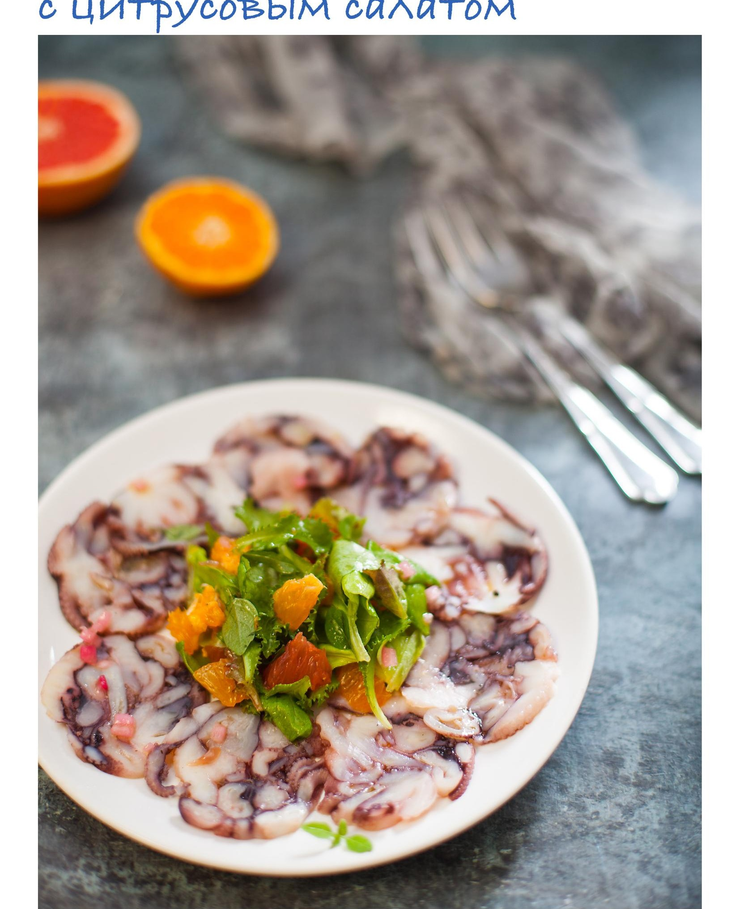

Вареный осьминог прессуется в «колбасу», которую нарезают тончайшими ломтиками и подают с цитрусовым салатом. Сварить и утрамбовать осьминога лучше всего накануне. Салат и заправку делать в день праздника.
Возможность хранить: да (прессованный осьминог до 1–2 дней). Заморозка: нет.
для карпаччо:
для цитрусового салата: